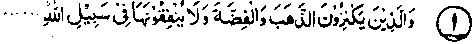

Chapter Five
On Threats of Punishment for Non-Payment of Zakaat
There are a good many Ayaat on the above subject, most of which have already been discussed in Chapter Two, entitled ‘Deprecation of Miserliness’; the Ulama have explained that all these Ayaat pertain to non-payment of Zakaat. Obviously, the threats of punishment for miserliness apply even more aptly to nonpayment of Zakaat, which, all agree, is obligatory for a Muslim.
Section (a)
Ayaat of Punishment for Non-Payment of Zakaat
1. Some relevant Ayaat
Ayat 1

"They who hoard up gold and silver and do not spend in the path of Allah................"to the end of the Ayat.
This Ayat has been quoted in full at Serial No. 5 in Chapter Two above. Majority of the Sahabah and Ulama are agreed that this Ayat was concerning the non-payment of Zakaat: The severe punishment mentioned in the Ayat is meant for those who do not pay Zakaat, as mentioned earlier. In a number of Ahadith, Rasulullah Sallallaho alaihe wasallam has confirmed that the punishment described in this Ayat, viz. branding their foreheads and their flanks and their backs with gold, etc., heated in the fire of Jahannam, is meant for those who do not pay Zakaat. We invoke Allah's Mercy to protect us against such a severe punishment. We all know how unbearably painful is the slightest touch of burning hot metal.And-thecostiliera man’s possessions are, the greater will be the number of brandings which he shall have to experience for hoarding (worthless) pieces of gold or silver.
Ayat 2
"And let not those who hoard up that which Allah has bestowed upon them of His bounty.......to the end of the Ayat”.
This Ayat has been quoted in full at Serial No. 3 in Chapter two above, and also the following Hadith from Bukhari, corroborating the Ayat. Rasulullah Sallallaho alaihe wasallam, says, "If anyone is granted property by Allah Ta'ala and he does not pay Zakaat on it, his property will become for him (on the Day of Resurrection) a snake which shall be coiled around his neck and will say to him, ‘I am your property; I am your treasure". If a snake is seen in a house, nobody has the courage to enter it in the dark, for fear lest it should attack him. Rasulullah Sallallaho alaihe wasallam has told us that if a man does not pay Zakaat on his wealth and puts it away as hidden treasures or in steel almirahs, it shall be turned into a snake and hung round his neck on the Day of Resurrection. Whereas the snake seen in a house may or may not attack you (it may be just a possibility), still you are frightened and look around, fearing lest it should come out of this, hole or that one. The punishment for nonpayment of Zakaat (in the form of a snake hung round the neck ) is certain, yet we do not feel afraid of it!